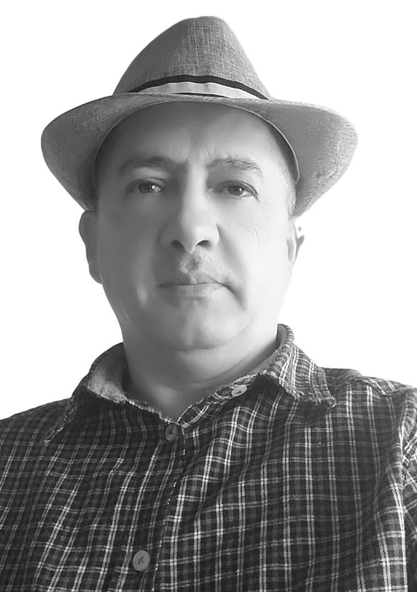

School of Integrated Consciousness
An independent research framework exploring artificial intelligence, complex systems, memory, decision architecture, consciousness, time and dynamic stability.

Bassam Alkarishy
Bassam Alkarishy is an independent researcher working across artificial intelligence, complex systems, memory-driven adaptive systems, consciousness, time and meaning.
His research includes the conceptual framework of Decision Isolation and Decision Independence for memory-driven artificial intelligence systems.
The School of Integrated Consciousness serves as an independent framework connecting theoretical research, computational exploration and system-oriented inquiry.
Research Radar
A visual map of the main research directions currently forming the School's scientific landscape.
Active Research Domains
The radar represents interconnected research directions rather than isolated disciplines.
- Artificial Intelligence & Memory-Driven Systems
- Decision Isolation & Decision Independence
- Complex Systems & Dynamic Stability
- Consciousness, Time & Meaning
- Quantum & Open-System Exploration
Decision Isolation & Decision Independence
Memory-driven artificial intelligence systems can accumulate historical context over long periods. This creates a structural question: how can a present decision remain appropriately grounded in the current context rather than being unduly shaped by irrelevant historical influence?
The Decision Isolation framework introduces a conceptual separation between present decision-making and historical information that is not justified by the current context.
Research Paths
The School studies complex adaptive phenomena across several connected domains.
Complex Systems
Structural and dynamic analysis of evolving systems, stability, drift and interaction.
Artificial Intelligence
Memory-driven adaptive intelligence, decision architecture and trustworthy AI.
Quantum Systems
Exploratory research into stability and state evolution in open quantum systems.
The School
The School of Integrated Consciousness is an independent research initiative created to investigate how structure, memory, decision, stability, interaction and change shape complex adaptive systems over time.